扉页
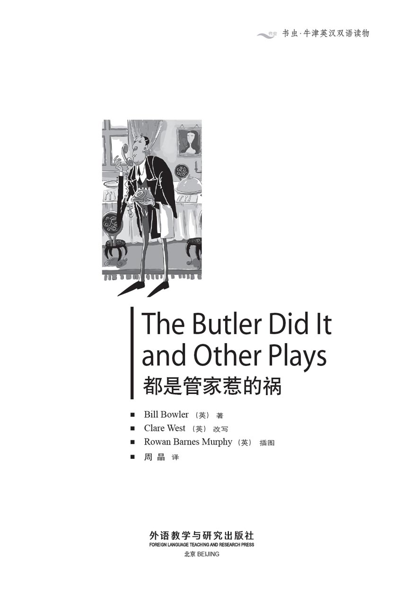
版权页
京权图字：01-2013-7813
Published by arrangement with Oxford University Press for sale in the People's Republic of China only and not for export therefrom. This edition is for sale in the mainland of China only, excluding Hong Kong SAR, Macao SAR and Taiwan.
© Oxford University Press 2008
Oxford is a registered trademark of Oxford University Press
图书在版编目（CIP）数据
都是管家惹的祸：英汉对照／（英）鲍勒（Bowler, B.）著；（英）韦斯特（West, C.）改写；（英）墨菲（Murphy, R. B.）绘；周晶译．—北京：外语教学与研究出版社，2013.12
（书虫·牛津英汉双语读物）
书名原文：The butler did it and other plays
ISBN 978-7-5135-3928-9
Ⅰ．①都… Ⅱ．①鲍… ②韦… ③墨… ④周… Ⅲ．①英语－汉语－对照读物②话剧剧本－作品集－英国－现代 Ⅳ．①H319.4：I
中国版本图书馆CIP数据核字（2013）第309200号
出版人 蔡剑峰
责任编辑 张红岩
封面设计 蔡 颖
出版发行 外语教学与研究出版社
社 址 北京市西三环北路19号（100089）
网 址 http://www.fltrp.com
版 次 2014年1月第1版
书 号 ISBN 978-7-5135-3928-9
制售盗版必究 举报查实奖励
版权保护举报电话：(010)88817519
内容简介
内容简介
世事难预料，乌龙免不了。在这六个短剧中，总有或大或小的麻烦来给剧中人的生活加点儿料。
管家詹姆斯对“先生”总是唯命是从。他总是说：“好的，先生。”这一点使他成为一个好管家。可是有一天，“先生”吩咐詹姆斯做一件很不寻常的事，詹姆斯有没有遵命照办呢？
大多数办事员对上司也是唯命是从。他们知道有什么事情是该做的，有什么事情是不该做的。他们说：“得照章办事。”这可害苦了到办证处给宠物猴子办许可证的老兄！
罗杰的问题是没什么钱，他富有的女朋友却为他迟迟不求婚而烦恼。事情似乎很容易解决，不过就像书中其他短剧一样，问题可要复杂得多，也有趣得多。
THE BUTLER DID IT AND OTHER PLAYS
THE BUTLER DID IT
AND OTHER PLAYS
Things go wrong, and funny things happen, in these six short plays. There is always something which causes problems for someone.
James, the butler, always does what 'sir' tells him. 'Very good, sir,' he says. That's what makes him a good butler. But one day 'sir' asks James to do something very unusual. Does James do it or not?
Most office workers do what their employer tells them, too. They know exactly what people must or must not do. 'Rules are rules,' they say. This makes life difficult for the man with the monkey, when he visits the licensing office!
Roger's problem is that he hasn't got much money. His rich girlfriend's problem is that he hasn't asked her to marry him. There seems to be an easy answer, but as in all these plays, things are more difficult, and much funnier, than that.
目录
The Butler Did It
The Butler Did It
INTRODUCTION
Henry Fletcher is working in his office. He is thinking about his wife. What's she doing at the moment? Has she got a boyfriend? Perhaps she has, perhaps she hasn't. Is she with her lover now? He wants to know! So he phones home. But only James, the butler, answers...
CHARACTERS IN THE PLAY
James, a butler
Henry Fletcher, a husband
PERFORMANCE NOTES
There are two rooms on the stage, with a wall between them. One is a dining room, where James the butler is getting the table ready for dinner. There is a telephone in the room. The other room is an office, where Henry Fletcher is working. He is sitting in front of his computer, but he isn't looking at it. He is making a phone call.
You will need two telephones and a gun.
The plumber's name, Blessiu, sounds like 'Bless you!' which is what we often say when someone sneezes.
The phone rings in the dining room. James stops work and answers it.
JAMES
Hello.
HENRY
Hello, is that James, the butler?
JAMES
Yes, sir, it is.
HENRY
James, is my wife at home?
JAMES
Yes, sir.
HENRY
Good. Can you bring her to the phone? I want to speak to her at once. Be quick!
JAMES
Very good, sir. So you want me to bring your wife to the phone. Is that right, sir?
HENRY
Yes, yes, James. Now just go and do it. (James goes off slowly. Henry speaks to himself.) My wife's got a lover, I think. But I must know! What's James doing? And where's my wife?
James comes back slowly and speaks into the phone.
JAMES
Hello, sir. James speaking.
HENRY
Hello, James. So where's my wife?
JAMES
Your wife is at home, sir, but she can't speak to you at the moment, I'm afraid.
HENRY
She can't speak to me! My wife can't speak to me! Why not?
JAMES
Well, sir, she's in the bathroom...
HENRY
In the bathroom!
JAMES
...with a man.
HENRY
(Putting a hand to his head) With a man!
JAMES
But don't worry, sir, it's only Mr Blessiu, the plumber. He's working in the bathroom.
HENRY
(Not listening, speaking to himself) She's in the bathroom with her boyfriend! I knew it! James, can you do something for me?
JAMES
Of course, sir.
HENRY
Go into my bedroom, and find the box under my bed. In that box there's a gun. Take it out, James.
JAMES
Very good, sir. You want me to go into your bedroom, find the box under your bed, and take out the gun. Is that right, sir?
HENRY
Yes, James, yes! Just go and do it.
James goes off slowly. Henry speaks to himself.
HENRY
I knew it! My wife's got a lover! But soon James is going to come back with that gun, and then...
James comes back with the gun.
JAMES
(Into the phone) Hello, sir, James here.
HENRY
Hello, James. Have you got the gun?
JAMES
Yes, sir. I went into your bedroom, found the box under your bed, and took out the gun. I have it with me now, sir.
HENRY
Right, James. Now listen carefully.
JAMES
I'm listening very carefully, sir.
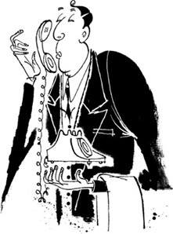
'Hello, sir, James here.'
HENRY
Go into the bathroom...
JAMES
Yes, sir.
HENRY
...with the gun...
JAMES
Yes, sir.
HENRY
...and shoot my wife through the head.
JAMES
Yes, sir.
HENRY
And the man in the bathroom with her, James, shoot him through the head too. (He sneezes.)
JAMES
Blessiu, sir?
HENRY
Thank you, James. Now, James, do you understand what to do?
JAMES
Yes, sir. You want me to go into the bathroom with the gun, shoot your wife through the head, and shoot the man with her through the head, too, sir. (He sneezes.)
HENRY
Bless you, James!
JAMES
That's right, sir.
HENRY
Very good, James. Well, just go and do it.
James goes off. We hear two gun shots.
HENRY
(Looking pleased and smiling to himself) Aha! Good old James! Well done!
James comes back slowly, without the gun.
JAMES
(Into the phone) Hello, sir. Did you hear the shots, sir?
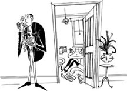
'Did you hear the shots, sir?'
HENRY
Yes, James, I did. Is everything all right?
JAMES
Oh yes, sir. I went into the bathroom with the gun, and I shot your wife through the head, and I shot the man with her through the head, too.
He sneezes.
HENRY
Bless you, James!
JAMES
That's right, sir.
HENRY
Right, and are the two of them dead, James?
JAMES
Oh yes, sir.
HENRY
Very good, James. Oh, and James...
JAMES
Yes, sir?
HENRY
What did you do with the gun?
JAMES
The gun, sir?
HENRY
Yes, James, the gun. What did you do with it?
JAMES
Ah, yes, sir. I put it in the swimming pool.
HENRY
The swimming pool, James?
JAMES
The swimming pool in the back garden, sir.
HENRY
(Looking afraid) But we haven't got a swimming pool in our back garden!
Nobody says anything for a moment.
JAMES
Oh, I see. Well, then, you've got the wrong number, I'm afraid, sir. Goodbye.
HENRY
Oh, I – er – Goodbye.
James goes back to his work, getting the table ready for dinner. He is smiling and singing quietly to himself.
Henry sits in his chair, with a very white face.
butler n. a man who works in another person's house, and takes special care of his employer's clothes, food and wine 管家
at once without delay 马上
I'm afraid used to politely tell someone something that may annoy, upset, or disappoint them 恐怕
plumber n. someone whose job is to repair water pipes, baths, toilets etc 管道工
carefully adv. in a way trying to avoid missing something 仔细地
shoot v. to send a bullet from a gun to hurt or kill someone 开枪
sneeze v. to suddenly send out air from your nose and mouth 打喷嚏
pleased adj. happy or satisfied 满意的，高兴的
都是管家惹的祸
都是管家惹的祸
内容简介
亨利·弗莱彻正在办公室上班。他正想着他妻子——她这会儿在做什么？她有没有情人？或许她有，或许她没有。她现在会不会正跟她的情人在一起？他想知道！于是他往家里打电话，可接电话的是管家詹姆斯……
剧中人物
詹姆斯，管家
亨利·弗莱彻，丈夫
场景说明
舞台上有两个房间，由一堵墙隔开。一间是饭厅，管家詹姆斯正在往餐桌上摆放餐具，为晚餐做准备。房间里有一部电话。另一个房间是办公室，亨利·弗莱彻正在里面工作。他坐在电脑前，但没有看电脑，而是在打电话。
准备两部电话和一把枪。
管道工的名字是布莱修，听起来就像“Bless you!（上帝保佑你！）”。有人打喷嚏时，我们常常说这句话。
（本剧本为荒诞题材作品）
饭厅里的电话响起来。詹姆斯停下手里的活儿去接电话。
詹姆斯：
喂。
亨利：
喂，是管家詹姆斯吗？
詹姆斯：
是的，先生，是我。
亨利：
詹姆斯，我妻子在家吗？
詹姆斯：
在，先生。
亨利：
很好。你能让她来接电话吗？我想马上跟她讲话。快点儿！
詹姆斯：
好的，先生。您是让我去请您妻子来接电话，对吗，先生？
亨利：
对，对，詹姆斯。现在就去叫她来。（詹姆斯慢条斯理地下场。亨利自言自语。）我觉得我妻子有个情人。不过我得弄清楚！詹姆斯在干什么？我妻子在哪儿呢？
詹姆斯慢条斯理地走回来，接起电话。
詹姆斯：
喂，先生。我是詹姆斯。
亨利：
喂，詹姆斯。我妻子在哪儿？
詹姆斯：
您妻子在家，先生，但是恐怕现在不能跟您讲话。
亨利：
她不能跟我讲话！我妻子不能跟我讲话！为什么不能？
詹姆斯：
呃，先生，她在卫生间……
亨利：
在卫生间！
詹姆斯：
……跟一个男人在一起。
亨利：
（以手抚头）跟一个男人在一起！
詹姆斯：
不过别担心，先生，那个人是管道工布莱修先生。他正在卫生间干活儿。
亨利：
（没听电话，自言自语）她跟她的情人在卫生间里！我就知道！詹姆斯，你能替我做件事吗？
詹姆斯：
当然，先生。
亨利：
去我的卧室，把我床下的盒子找出来。盒子里有把枪，把它拿出来，詹姆斯。
詹姆斯：
好的，先生。您要我去您的卧室，找到您床下的盒子，把里面的枪拿出来，是吗，先生？
亨利：
是的，詹姆斯，是的！现在就去拿！
詹姆斯慢条斯理地下场。亨利自言自语。
亨利：
我就知道！我妻子有了情人！不过很快詹姆斯就会拿着枪回来，然后……
詹姆斯拿着枪回来了。
詹姆斯：
（对着电话）喂，先生，我是詹姆斯。
亨利：
喂，詹姆斯，你拿到枪了吗？
詹姆斯：
拿到了，先生。我进了您的卧室，在您床下找到了那个盒子，把枪拿出来了。我现在就拿着枪呢，先生。
亨利：
好的，詹姆斯。现在听好了。
詹姆斯：
我在仔细听着呢，先生。
亨利：
去卫生间……
詹姆斯：
好的，先生。
亨利：
……带着枪……
詹姆斯：
好的，先生。
亨利：
……朝我妻子头上开一枪。
詹姆斯：
好的，先生。
亨利：
还有那个跟她一起在卫生间的人，詹姆斯，朝他头上也开一枪。（他打了个喷嚏。）
詹姆斯：
布莱修，先生？
亨利：
谢谢，詹姆斯。［译者注：亨利以为詹姆斯说的是“Bless you.（上帝保佑你。）”。］现在，詹姆斯，你明白要做什么了吗？
詹姆斯：
明白了，先生。您要我拿着枪到卫生间去，朝您妻子的头上开一枪，再朝那个跟她在一起的男人头上开一枪，先生。（他打了喷嚏。）
亨利：
上帝保佑你，詹姆斯！
詹姆斯：
是的，先生。［译者注：詹姆斯以为亨利说的是“Blessiu（布莱修）”。］
亨利：
很好，詹姆斯。好了，去干吧。
詹姆斯下。我们听到两声枪响。
亨利：
（看上去很满意，暗自笑了笑）啊哈！好样的詹姆斯！干得好！
詹姆斯慢条斯理地回来了，手里没有拿枪。
詹姆斯：
（对着电话）喂，先生。您听到枪响了吗，先生？
亨利：
听到了，詹姆斯，我听到了。一切都顺利吗？
詹姆斯：
哦，是的，先生。我拿着枪进了卫生间，朝您妻子头上开了一枪，又朝那个跟她在一起的男人头上开了一枪。
他打了个喷嚏。
亨利：
上帝保佑你，詹姆斯！
詹姆斯：
是的，先生。［译者注：詹姆斯以为亨利说的是“Blessiu（布莱修）”。］
亨利：
好的，他们俩都死了吗，詹姆斯？
詹姆斯：
哦，是的，先生。
亨利：
很好，詹姆斯。哦，对了，詹姆斯……
詹姆斯：
什么事，先生？
亨利：
你怎么处理那把枪的？
詹姆斯：
那把枪吗，先生？
亨利：
是的，詹姆斯，那把枪。你是怎么处理它的？
詹姆斯：
啊，对了，先生，我把它放到游泳池里了。
亨利：
游泳池吗，詹姆斯？
詹姆斯：
后花园里的游泳池，先生。
亨利：
（面露惧色）可是我们后花园里没有游泳池啊！
两人沉默了片刻。
詹姆斯：
哦，我明白了。好吧，那么恐怕您打错电话了，先生。再见。
亨利：
哦，我——呃——再见。
詹姆斯继续干活儿，往餐桌上摆放餐具。他面露微笑，轻轻哼着歌。亨利则坐在椅子上，面色惨白。
Old Friends
Old Friends
INTRODUCTION
Celia is sitting at a street café one day, drinking coffee, when suddenly she sees an old school friend, Amanda. The two women are happy to talk about old times and the men in their lives. They always like very different men, of course...
CHARACTERS IN THE PLAY
Celia, a woman of about 45
Amanda, her school friend
Waiter
Robert, a man of about 45
PERFORMANCE NOTES
The scene is a street café. There are tables and chairs outside. The waiter sometimes comes out of the café to see if anyone wants anything. Celia is sitting at one of the tables. She is wearing a big, expensive ring on the ring finger of her left hand.
You will need a cup of coffee, a bottle or glass of coke, and Celia's ring.
Amanda is walking past the café. Celia suddenly sees her and calls to her.
CELIA
Amanda? Is it you?
AMANDA
Sorry? Do I know you?
CELIA
Of course you do. It's me, Celia. We were at school together.
AMANDA
Celia! How wonderful to see you again!
CELIA
Do you remember me now?
AMANDA
Oh yes, but you do look different.
CELIA
Older, perhaps?
AMANDA
Well, yes.
CELIA
Well, I am older! So are you! Sit down and have a drink with me.
AMANDA
Yes, why not? (She sits down at the table.)
CELIA
What are you going to have? Coffee?
AMANDA
Oh, a coke, I think.
CELIA
(Calling) Waiter! (The waiter comes to the table.)
WAITER
Good morning. What would you like?
CELIA
A coffee for me, please, and a coke for my friend.
WAITER
Would you like a sandwich or anything? They're very good.
CELIA
No, no, thank you. Just the drinks.
WAITER
Right. (He goes off.)
AMANDA
Well, this is nice! When did we last meet? About fifteen years ago, was it?
CELIA
Twenty-five, Amanda.
AMANDA
Twenty-five? No! It can't be! Do you sometimes see any of our old friends?
CELIA
No, no, I don't.
The waiter brings the drinks and puts them on the table.
WAITER
Here you are, one coffee and one coke.
AMANDA
(To him) Thank you. (To Celia) I say, do you remember Rod Hunk? All the girls liked him! What happened to him, do you think?
CELIA
Oh, I don't know. I didn't like him much. But what about Rocky Rambo? You and he were together at one time, I think.
AMANDA
Ah yes, but he left me years ago.
CELIA
Oh, I am sorry.
AMANDA
No, no, I was happy when he left. I was tired of him, you know. It's always much better to find a new boyfriend! Much more exciting!
CELIA
Perhaps you're right. And what about Romeo Valentine? You went out with him, too.
AMANDA
Oh yes, but I left him. Time for a change, I thought!
CELIA
Oh, I see.
AMANDA
And what about you, Celia? Are there any men in your life at the moment?
CELIA
(Looking shyly down at the big expensive ring on her finger) Well...
AMANDA
Oh, Celia, do tell me!

'Are there any men in your life at the moment?'
CELIA
Well, there is a man in my life, and I'm going to marry him next week!
AMANDA
You're going to marry him! Wonderful! Tell me all about him.
CELIA
He's called Robert. He's very handsome, but very shy. He's coming here soon, to meet me.
AMANDA
His name's Robert? Well, well, well! You know, I met a very handsome man last night, and he was called Robert, too. But he wasn't shy! Not at all! He asked me to call him Bob.
CELIA
My Robert doesn't like the name Bob.
AMANDA
Well, I met this Bob in a café and we had a few drinks. And then we went out to dinner. And then we went dancing. Oh, we had a wonderful time!
CELIA
My Robert doesn't like dancing.
AMANDA
We talked and laughed and danced, and drank and danced and laughed, and then... But what about you and Robert? What do you usually do?
CELIA
Oh well, Robert likes a quiet evening with me at my house. We read, and watch television. Sometimes we go out to the cinema.
AMANDA
Do you? Bob wants to see me again next week. He calls me Mandy. I like that.
CELIA
Robert isn't interested in drinking or dancing or meeting girls. He's a very quiet person.
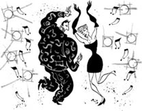
'Oh, we had a wonderful time!'
AMANDA
Bob isn't quiet. Not at all!
CELIA
I'm his first girlfriend, you see. So this is all new to him. Oh look, here he comes now!
Robert comes in, from behind Amanda. He can't see her face. He kisses Celia.
ROBERT
Hello, Celia, darling!
CELIA
Robert, darling! I'd like you to meet an old school friend. Amanda, this is Robert.
ROBERT
How do you do?
AMANDA
How do you do? (Looking up into his face) Oh no! It's you! Bob!
ROBERT
(Seeing her face) Oh no! It's you! Mandy!
CELIA
(Angrily) Robert!
ROBERT
What can I say? I'm sorry! I'm very, very sorry!
Robert runs off. Celia and Amanda run after him.
AMANDA
Bob! Bob! We must talk about all this! I want to see you again!
CELIA
Robert! Robert! Come back here at once! Are you going to marry me or not?
ROBERT
Help! Help! Help!
The waiter comes in.
WAITER
Would you like to pay now? (He sees them running away.) Hey, come back!
He runs angrily after them.
café n. a snack-bar or small restaurant where you can buy drinks and snacks to eat 咖啡馆
waiter n. a man who brings food or drinks to your table in a café 服务生
exciting adj. making you feel happy, interested, or hopeful because something good has happened or will happen 令人兴奋的
expensive adj. costing a lot of money 昂贵的
handsome adj. (of a man) good-looking 英俊的
老朋友
老朋友
内容简介
一天，西莉亚坐在一个街头咖啡馆外喝咖啡，突然看到了学生时代的朋友阿曼达。两个女人畅谈旧日时光和各自生活里的男人。当然，她们喜欢的男人向来都不同……
剧中人物
西莉亚，一个大约45岁的女人
阿曼达，西莉亚学生时代的朋友
服务生
罗伯特，一个大约45岁的男人
场景说明
场景是一家街头咖啡馆，有露天桌椅。服务生不时从咖啡馆出来看看有没有人需要服务。西莉亚坐在其中一个座位上。她的左手无名指戴着一枚昂贵的大戒指。
要准备一杯咖啡、一瓶或一杯可乐，还有西莉亚的戒指。
阿曼达路经咖啡馆。西莉亚突然看到她，把她叫住。
西莉亚：
阿曼达？是你吗？
阿曼达：
你是？我认识你吗？
西莉亚：
你当然认识。是我呀，西莉亚。我们一起上过学。
阿曼达：
西莉亚！真高兴又见面！
西莉亚：
你现在想起我来了？
阿曼达：
哦，是的，可是你的样子真的变了。
西莉亚：
是不是变老了？
阿曼达：
呃，是的。
西莉亚：
嗯，我确实变老了！你也一样！坐下跟我喝一杯吧。
阿曼达：
好啊，为什么不呢？（她在桌旁坐下。）
西莉亚：
你要点什么？咖啡？
阿曼达：
哦，我要可乐。
西莉亚：
（喊道）服务生！（服务生来到桌旁。）
服务生：
早上好。您要点什么？
西莉亚：
请给我一杯咖啡，给我朋友一杯可乐。
服务生：
您要不要来块儿三明治或别的什么？味道很好的。
西莉亚：
不，不了，谢谢。只要饮料。
服务生：
好的。（服务生下场。）
阿曼达：
唔，真是不错！我们上次见面是什么时候？大概15年前了，是吧？
西莉亚：
25年前了，阿曼达。
阿曼达：
25年前？噢！不可能！你跟我们那些老朋友还偶尔见面吗？
西莉亚：
不，没有，不见面了。
服务生端来饮料，放在桌子上。
服务生：
你们的饮料，一杯咖啡，一杯可乐。
阿曼达：
（对服务生）谢谢。（对西莉亚）我说，你还记得罗德·汉克吗？当初所有的女孩都喜欢他！你觉得他后来怎么样了？
西莉亚：
哦，我不知道。我不怎么喜欢他。倒是罗基·兰博怎么样了？我想你曾经跟他在一起过。
阿曼达：
啊，是的，不过好多年前他就离开我了。
西莉亚：
哦，我真的很遗憾。
阿曼达：
不，不，他离开的时候我很高兴。你要知道，那时候我已经厌倦了他。男朋友新的总比旧的好！要带劲儿得多！
西莉亚：
或许你是对的。那罗密欧·瓦伦丁呢？你也跟他约会过。
阿曼达：
哦，是的，不过我离开他了。我觉得是时候该换个新男友了！
西莉亚：
哦，我明白了。
阿曼达：
那你呢，西莉亚？现在你的生活里有男人吗？
西莉亚：
（羞涩地低头看手指上昂贵的大戒指）嗯……
阿曼达：
哦，西莉亚，跟我说说！
西莉亚：
好吧，我生活里确实有个男人，而且我下个星期就要嫁给他了！
阿曼达：
你要嫁给他了！太好了！给我好好讲讲他。
西莉亚：
他叫罗伯特。他很帅，但是很害羞。他过会儿就来这儿跟我见面。
阿曼达：
他叫罗伯特？哎呀，哎呀！你知道吗，我昨晚认识了一个很帅的男人，他也叫罗伯特。但是他可不害羞！一点儿也不害羞！他让我叫他鲍勃。
西莉亚：
我的罗伯特可不喜欢鲍勃这个名字。
阿曼达：
嗯，我在一个咖啡馆里遇到这个鲍勃，一起喝了几杯。然后我们一起出去吃饭，后来我们还去跳舞。哦，我们在一起玩得开心极了！
西莉亚：
我的罗伯特不喜欢跳舞。
阿曼达：
我们又说又笑，一起跳舞，一起喝酒，又跳舞，笑个不停，后来……不过你和罗伯特怎么样？你们一般都做什么？
西莉亚：
哦，罗伯特喜欢待在我家，跟我安安静静过一个晚上。我们看书，看电视。有时候我们出去看电影。
阿曼达：
是吗？鲍勃下个星期还想见我。他叫我曼迪，我喜欢他这么叫我。
西莉亚：
罗伯特对喝酒啦、跳舞啦还有跟姑娘约会都没兴趣。他是个很安静的人。
阿曼达：
鲍勃可不是个沉默的人。一点儿也不！
西莉亚：
你要知道，我是他的第一个女朋友，所以他没什么经验。哦，看，他来了！
罗伯特从阿曼达背后上场。他看不到她的脸。他吻了吻西莉亚。
罗伯特：
你好，西莉亚，亲爱的！
西莉亚：
罗伯特，亲爱的！我想让你来见见我上学时的老朋友。阿曼达，这就是罗伯特。
罗伯特：
你好。
阿曼达：
你好。（抬头看向他的脸）哦！是你！鲍勃！
罗伯特：
（看到她的脸）哦！是你！曼迪！
西莉亚：
（生气地）罗伯特！
罗伯特：
我说什么好呢？我很抱歉！我非常非常抱歉！
罗伯特逃跑。西莉亚和阿曼达在后面追他。
阿曼达：
鲍勃！鲍勃！我们得把这一切说清楚！我还想跟你见面啊！
西莉亚：
罗伯特！罗伯特！快回来！你到底还要不要和我结婚？
罗伯特：
救命！救命！救命啊！
服务生上场。
服务生：
你们现在能把账结了吗？（他看到三人跑走。）嘿，回来！
他生气地去追他们。
Fred's Future
Fred's Future
INTRODUCTION
Fred Fish isn't happy with his life. He would like to do something more exciting. What's going to happen to him in the future? Perhaps Madame Rosa can tell him. She can read the future in her crystal ball, or in people's hands. Sometimes she can read people's faces, and then she tells them what they want to hear. But sometimes she gets it wrong, and people don't like what she tells them. If they aren't happy, they don't give her any money. And she needs the money.
CHARACTERS IN THE PLAY
Madame Rosa, a woman who can see into the future
Fred Fish, a teacher
PERFORMANCE NOTES
The scene is Madame Rosa's living room, with a table and two chairs. On the table is a big crystal ball. Madame Rosa is sitting at the table, looking into the crystal ball.
You will need a crystal ball and some money.
ROSA
(Looking into her crystal ball) What's going to happen today? Ah, I can see money! Yes, somebody's going to give me a lot of money! Wonderful! Who can it be?
FRED
(Coming in) Hello. Are you Madame Rosa?
ROSA
That's right. Do sit down.
Fred sits down at the table.
FRED
Thank you. Er, my name's Fred Fish—
ROSA
Let me see, you're a teacher, you live in London, and you want to know about your future. Right?
FRED
Yes, yes! How do you know all this?
ROSA
(Looking into the crystal ball) I can see you here.
FRED
Wow! That's interesting! So can you tell me about my future? What's going to happen to me?
ROSA
I can tell you, but remember, nothing is free these days.
FRED
Oh, I know. I brought some money with me.
ROSA
(Smiling) That's very good! Right, can you give me your hand, please? I'm going to read it. (She takes his hand and looks carefully at it.) I can see love here. Soon you're going to meet a beautiful American girl. You're going to marry her.
FRED
But I've got a very nice girlfriend at the moment! She's Australian!
ROSA
Forget about her! No, you're going to marry the American. I can see it in your hand.
FRED
Can you tell me any more?
ROSA
Yes. Soon you're going to leave London and move to Hollywood, with your American wife.
FRED
Hollywood! Where all the famous people live!
ROSA
That's right. And you're going to stop teaching. You're going to be an actor, and become famous for acting in all the best Hollywood films!
FRED
Wonderful! I'm going to become rich!
ROSA
Well, yes, but things aren't going to be easy for you. Your wife is going to take a lover.
FRED
Oh no! Another famous actor, perhaps?
ROSA
Yes, that's right. And you're going to start drinking, at first in the evening, and then in the daytime.
FRED
Oh dear, that's bad.
ROSA
Yes. And nobody's going to give you any more acting work, because you drink.
FRED
So what happens to me after all this?
ROSA
You kill yourself, I'm sorry to say.
FRED
What? No! I'm not going to kill myself!
ROSA
It's very quick. You shoot yourself one night.
FRED
I didn't come here to hear about dying!
ROSA
It's all in your hand. That's ￡25, please.
FRED
It can't be right! Can you look at my hand again?
ROSA
Oh, all right. (Looking at his hand again) Let me see – perhaps you marry the Australian girl.
FRED
That's better!
ROSA
Yes, and you leave London to move to Sydney, with your Australian wife.
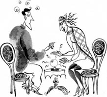
'I didn't come here to hear about dying!'
FRED
Mmm, yes, it's wonderfully hot there.
ROSA
And you're going to stop teaching, and become a very good tennis player.
FRED
I was very good at tennis at school, you know.
ROSA
You're going to meet all the famous players and play tennis with them. People are going to watch you playing tennis on TV.
FRED
Wow! I'm going to become rich and famous!
ROSA
Yes, but things aren't going to be easy for you. Your wife's going to—
FRED
Be careful!
ROSA
Let me see – er – your hand's difficult to read. Ah yes, your wife's going to have a baby.
FRED
Oh, good. I like children.
ROSA
Yes, and then she's going to have a second baby, and then a third.
FRED
Oh! But I'm never going to see the children! I'm going to be on TV all the time!
ROSA
Things aren't going to be easy. I told you that.
FRED
Perhaps I'm going to stop being a tennis player and be a teacher again. Then I can help my wife with the children in the holidays.
ROSA
Er – that's right. It's all in your hand. You're going to stop playing tennis and begin teaching again.
FRED
But am I going to be happy? That's the most important thing.
ROSA
Oh yes. You're going to be very happy with your family, and you're going to live in a beautiful big house in Sydney.
FRED
I can always play tennis with my friends at the weekend.
ROSA
Yes, of course. So there you are. Now you know about your future. Are you happy with that?
FRED
Yes. Yes, thank you. Very interesting. I'm going to ask my girlfriend to marry me at once!
ROSA
Why not? And move to Australia?
FRED
That's right. And before we go, I'm going to play some tennis. I must get better at it!
ROSA
Right, well, that's ￡30, please.
FRED
Of course. Here you are. (He takes some money from his pocket and gives it to her.) Things are going to be very exciting for me! Thank you, thank you, thank you!
ROSA
(Smiling) Thank you.
She takes the money and Fred goes out.
You're going to become a very good tennis player.
crystal ball n. a round glass ball, in which some people think they can see the future 水晶球
actor n. a man who acts in plays or films 男演员
弗雷德的未来
弗雷德的未来
内容简介
弗雷德·菲什对自己的生活不满意。他想做些更刺激的事情。他的未来会怎样呢？或许罗莎夫人能告诉他。她能从她的水晶球里或是人们的手掌上看到未来。有时她还会观察脸色，然后说些人们想听的话。但有时候她也会弄错，说些人们不爱听的话。如果人们不高兴，就不会给她钱。而她需要那些钱。
剧中人物
罗莎夫人，一个能预见未来的女人
弗雷德·菲什，一个老师
场景说明
场景是罗莎夫人的客厅，有一张桌子和两把椅子。桌上有一个大水晶球。罗莎夫人坐在桌旁看着水晶球。
要准备一个水晶球和一些钱。
罗莎：
（看着水晶球）今天会有什么事情发生呢？啊，我看到钱了！对，有人要来给我好多钱！太好了！会是谁呢？
弗雷德：
（走进来）你好，你是罗莎夫人吗？
罗莎：
是的，快请坐。
弗雷德坐到桌旁。
弗雷德：
谢谢。呃，我叫弗雷德·菲什……
罗莎：
让我看看，你是个老师，住在伦敦，想知道你的未来，对不对？
弗雷德：
对，没错！你是怎么知道的？
罗莎：
（看着水晶球）我能在这里面看到你。
弗雷德：
哇！真有意思！那你能告诉我我的未来吗？我会怎样？
罗莎：
我可以告诉你，不过要知道，如今没有什么是免费的。
弗雷德：
哦，我知道。我带了钱。
罗莎：
（微笑）那太好了！好了，请把你的手给我，好吗？我要看看你的手。（她握住他的手，仔细地看起来。）我在这儿看到爱情。很快你就会遇到一个漂亮的美国姑娘。你会跟她结婚。
弗雷德：
可我现在已经有个很好的女朋友了！她是澳大利亚人。
罗莎：
忘了她吧！不，你会跟那个美国姑娘结婚。我在你的手上看到了。
弗雷德：
你能再多告诉我一些事吗？
罗莎：
好。很快你就会离开伦敦，跟你的美国太太搬到好莱坞去。
弗雷德：
好莱坞！那个名人聚居的地方！
罗莎：
对。你以后不会再教书了，你会成为一个演员，出演好莱坞所有顶尖大片，成为大明星！
弗雷德：
太棒了！我会变得很富有！
罗莎：
唔，是的，但是你的生活不会一帆风顺，你的妻子会有情人。
弗雷德：
哦，不！或许是另一个明星？
罗莎：
是的，没错。而你会开始酗酒，开始是在晚上，后来连白天也酗酒。
弗雷德：
哦，天哪，那太糟糕了。
罗莎：
是的。而且因为你酗酒，没人会再找你演出。
弗雷德：
那这以后我会怎么样？
罗莎：
我很遗憾，你会自杀。
弗雷德：
什么？不！我才不会自杀！
罗莎：
事情发生得很快，一天晚上你朝自己开了一枪。
弗雷德：
我来这儿可不是听什么死讯的！
罗莎：
这都写在你的手上。一共25英镑，付钱吧。
弗雷德：
肯定不对！你能再看看我的手吗？
罗莎：
哦，好吧。（又开始看他的手）让我看看——或许你会娶那个澳大利亚姑娘。
弗雷德：
还是这样好！
罗莎：
是的，你会跟你的澳大利亚太太离开伦敦，搬到悉尼。
弗雷德：
唔，这样呀，那儿天气热得很。
罗莎：
你不再教书，而是成为了一个很棒的网球运动员。
弗雷德：
你知道吗，我上学的时候，网球打得很好。
罗莎：
你会见到所有的著名球星，跟他们打球。大家会在电视上看你打网球。
弗雷德：
哇！我会名利双收！
罗莎：
是的，但是你的生活不会一帆风顺。你的妻子会——
弗雷德：
看好了再说！
罗莎：
让我看看——呃——你的手相有点复杂。啊，是的，你的妻子会生个孩子。
弗雷德：
哦，好啊。我喜欢孩子。
罗莎：
对，然后她还会生一个，之后又生一个。
弗雷德：
哦！可我根本不会有时间见到这些孩子！我会一直在电视上！
罗莎：
我告诉过你，你的生活不会一帆风顺的。
弗雷德：
或许我不当网球运动员，又重新当老师了。这样我就可以在假期里帮我妻子照顾孩子。
罗莎：
呃——是的。这都写在你的手上。你不再打网球，又开始当老师了。
弗雷德：
可是我会开心吗？那才是最重要的。
罗莎：
哦，会的。你会幸福地跟家人生活在一起，你们一家会住在悉尼一座漂亮的大房子里。
弗雷德：
反正我周末还可以跟朋友们打网球。
罗莎：
对，当然。就是这样了。现在你知道了你的未来，你满意吗？
弗雷德：
满意，满意，谢谢你。真有意思。我要马上去向我的女朋友求婚！
罗莎：
好哇。然后搬到澳大利亚？
弗雷德：
对。我们走之前，我要练习一下网球。我得打得再好一点儿才行！
罗莎：
没错，好了，一共是30英镑，请给钱吧。
弗雷德：
当然，给你。（他从口袋里掏出钱给她。）我的生活会变得很精彩！谢谢，谢谢，太谢谢了！
罗莎：
（微笑）是我谢你才对。
她接过钱，弗雷德离开了。
Have a Nice Holiday!
Have a Nice Holiday!
INTRODUCTION
Mr and Mrs Boggis want a holiday, but they don't know where to go. There are a lot of different places, and it's important to find the right one. Can the travel agent help? She knows all about the different places. Or does she?
CHARACTERS IN THE PLAY
Travel agent, a young woman
Mr Boggis, a man of about 40
Mrs Boggis, his wife
Man who speaks to the audience
PERFORMANCE NOTES
The scene is a travel agent's office, with pictures of holiday places on the walls. The travel agent is sitting at her computer, with two chairs in front of her.
You will need a pen and paper, and some plane tickets.
Mr and Mrs Boggis come into the office.
AGENT
Good afternoon. Can I help you?
MR BOGGIS
Yes, please. We'd like a holiday.
AGENT
Oh, yes. Where would you like to go?
MR BOGGIS
What do you think, dear?
MRS BOGGIS
Somewhere exciting!
MR BOGGIS
(To the agent) Somewhere exciting.
AGENT
(Writing it down) Somewhere exciting.
MRS BOGGIS
Somewhere hot!
MR BOGGIS
(To the agent) Somewhere hot.
AGENT
(Writing it down) Somewhere hot.
MRS BOGGIS
Somewhere far away!
MR BOGGIS
(To the agent) Somewhere far away.
AGENT
(Writing it down) Somewhere far away.
MRS BOGGIS
And somewhere cheap!
MR BOGGIS
(To the agent) And somewhere cheap.
AGENT
(Writing it down) And somewhere cheap. Right, let's see. There's a very nice holiday for two in Florida, in a really good hotel.
MRS BOGGIS
Ooh, that's nice!
MR BOGGIS
Yes. Very hot, Florida.
MRS BOGGIS
Yes, and very exciting.
MR BOGGIS
How much is the Florida holiday?
AGENT
Er, let me see. ￡2,000 for one person...
MR BOGGIS
￡2,000 for one person!
'Ooh, that's nice!'
AGENT
...for one day.
MR BOGGIS
For one day!
MRS BOGGIS
Oh dear. That's ￡28,000 for the two of us for a week. That's very expensive.
AGENT
You can't have everything. It's a very nice holiday. But let's find something cheaper, shall we?
MR BOGGIS
Er, yes, please.
AGENT
What about this? A camping holiday for two near the Scott Hills.
MRS BOGGIS
Ooh, that's interesting. I like camping. Are they far away, the Scott Hills?
AGENT
Oh, yes, very far away.
MR BOGGIS
Good. And is it a cheap holiday?
AGENT
Oh, yes. Only ￡20 for each person for a month.
MRS BOGGIS
And is it nice and hot there?
AGENT
Well, not very hot.
MRS BOGGIS
Tell me, where are the Scott Hills?
AGENT
In Antarctica, near the South Pole.
MR BOGGIS
Near the South Pole! But that isn't hot.
AGENT
No, but it's a very cheap holiday. I told you, you can't have everything.
MR BOGGIS
Look, we want somewhere hot and cheap.
AGENT
OK. Well, this one's just right for you.
MRS BOGGIS
Is it cheap?
AGENT
Oh, yes. It's cheap. Only ￡200 for two people. That's very cheap.
MR BOGGIS
Is it somewhere hot?
AGENT
Oh, yes. It's hot. But it isn't very far away, I'm afraid.
MRS BOGGIS
Oh, that doesn't matter. Where is it?
AGENT
Margarita, in the south of Spain. The Hotel Fantastico is very quiet, only five minutes' walk to the sea, and it has a swimming pool.
MRS BOGGIS
Ooh, that's wonderful. Let's take it.
MR BOGGIS
Yes, let's! Can I pay for it now? And can we go tomorrow?
AGENT
Of course. (She takes Mr Boggis's money and gives him two tickets.) Here are your tickets. Have a nice holiday! Goodbye!
MR AND MRS BOGGIS
Thank you. Goodbye!
Mr and Mrs Boggis go out with their tickets. A man comes in and speaks to the audience.
MAN
So, Mr and Mrs Boggis are going to have a wonderful holiday, are they? What do you think? Let's see, shall we? It's now two weeks later.
He goes off. Mr and Mrs Boggis come into the travel agent's office.
AGENT
Good morning. Can I help you?
MR BOGGIS
We're very angry about one of your holidays. To Margarita, it was.
AGENT
Ah, yes. Cheap, hot, and not very far away.
'We're very angry about one of your holidays.'
MR BOGGIS
Well, Margarita was OK, but the hotel was no good at all. It was quiet, you said.
AGENT
Well, I did say that, yes.
MRS BOGGIS
Well, the building was only half finished, so there were men at work day and night! There was a lot of noise.
MR BOGGIS
We couldn't sleep at all.
MRS BOGGIS
And it had a swimming pool, you said.
AGENT
Well, er, yes, perhaps I did say that.
MR BOGGIS
That was half finished, too. No water in it.
AGENT
I see. Well—
MRS BOGGIS
Five minutes' walk to the sea, you said.
MR BOGGIS
Perhaps it takes five minutes in a taxi. Not on foot, oh no!
AGENT
Oh dear. Well, I'm very sorry. Perhaps you'd like some of your money back?
MRS BOGGIS
No, we'd like another holiday now.
AGENT
Oh, yes, why not? How about two plane tickets to Australia? It's exciting, hot and very far away!
MRS BOGGIS
Ooh, wonderful! Let's take them.
AGENT
Here are your tickets, then. Have a nice holiday!
They go out happily with their tickets.
AGENT
(Smiling) The tickets are only to Australia! Perhaps they're never going to come back!
camping n. sleeping and cooking in the open air, as part of a holiday 露营
假日愉快！
假日愉快！
内容简介
博吉斯夫妇想去度假，但不知道去哪里好。可以去的地方有很多，关键是得找到合适的。旅游经纪人能帮上忙吗？她对所有的地方都了如指掌，那是真的吗？
剧中人物
旅游经纪人，一个年轻女士
博吉斯先生，一个大约40岁的男人
博吉斯太太，他的妻子
旁白
场景说明
场景是旅游经纪人的办公室，墙上贴着度假地的图片。旅游经纪人坐在电脑前，她面前有两把椅子。
要准备纸笔和几张飞机票。
博吉斯夫妇走进办公室。
经纪人：
下午好，有什么需要帮助的吗？
博吉斯先生：
有的，我们想度个假。
经纪人：
哦，好的。你们想去哪儿？
博吉斯先生：
你看呢，亲爱的？
博吉斯太太：
一个让人兴奋的地方！
博吉斯先生：
（对经纪人）让人兴奋的地方。
经纪人：
（写下来）让人兴奋的地方。
博吉斯太太：
一个炎热的地方！
博吉斯先生：
（对经纪人）一个炎热的地方。
经纪人：
（写下来）一个炎热的地方。
博吉斯太太：
一个遥远的地方！
博吉斯先生：
（对经纪人）一个遥远的地方。
经纪人：
（写下来）一个遥远的地方。
博吉斯太太：
一个便宜的地方！
博吉斯先生：
（对经纪人）一个便宜的地方。
经纪人：
（写下来）一个便宜的地方。好了，让我们看看。有一个很好的佛罗里达双人度假产品，入住一个非常棒的酒店。
博吉斯太太：
哦，很不错！
博吉斯先生：
是的，佛罗里达很热。
博吉斯太太：
是的，而且非常让人兴奋。
博吉斯太太：
这个佛罗里达度假产品要多少钱？
经纪人：
呃，让我看看，每人2,000英镑……
博吉斯先生：
一个人就要2,000英镑！
经纪人：
一天的报价。
博吉斯先生：
一天就要那么多！
博吉斯太太：
哦，天哪。那我们俩一星期就要28,000英镑。太贵了！
经纪人：
鱼和熊掌不能兼得。这是个很不错的度假产品，不过我们还是找个便宜些的吧，怎么样？
博吉斯先生：
呃，好的，劳驾。
经纪人：
这个怎么样？斯科特山附近的双人露营假日。
博吉斯太太：
哦，这个挺有趣。我喜欢露营。斯科特山远吗？
经纪人：
哦，远，非常远。
博吉斯先生：
好。这个度假产品便宜吗？
经纪人：
哦，当然。每人每月只要20英镑。
博吉斯太太：
那里热吗？
经纪人：
嗯，不是很热。
博吉斯太太：
告诉我，斯科特山在哪里？
经纪人：
在南极洲，靠近南极。
博吉斯先生：
靠近南极！可那里不热啊。
经纪人：
是的，但是这个度假产品很便宜。我说过了，鱼和熊掌不能兼得。
博吉斯先生：
瞧，我们想要找个既热又便宜的地方。
经纪人：
好吧。嗯，这个正好符合你们的要求。
博吉斯太太：
便宜吗？
经纪人：
哦，是的。这个便宜，两个人只要200英镑。这个价格非常便宜。
博吉斯先生：
那个地方热吗？
经纪人：
哦，是的。那儿很热，不过恐怕不是太远。
博吉斯太太：
哦，没关系。在哪里？
经纪人：
玛格丽塔，在西班牙南部。那里的奇妙酒店坐落在非常安静的地方，步行五分钟就可以到海边，酒店还有游泳池。
博吉斯太太：
哇，太好了。我们就要这个吧。
博吉斯先生：
好啊，就这个！我可以现在付款，明天出发吗？
经纪人：
当然。（她接过博吉斯先生的钱，给了他两张机票。）这是你们的机票。假日愉快！再见！
博吉斯夫妇：
谢谢，再见！
博吉斯夫妇拿着机票出去了。旁白上场，对观众讲话。
旁白：
这么说，博吉斯夫妇会有一个美妙的假期，是这样吗？你们怎么想的呢？让我们来看看吧。现在是两个星期后。
旁白下场。博吉斯夫妇走进旅游经纪人的办公室。
经纪人：
早上好。有什么需要帮忙的吗？
博吉斯先生：
我们对你们出售的一个度假产品很生气，是去玛格丽塔的。
经纪人：
啊，是这样。既便宜又热，而且不是很远。
博吉斯先生：
嗯，玛格丽塔还可以，可那酒店太糟糕了。你说那儿很安静。
经纪人：
嗯，是的，我是这么说的。
博吉斯太太：
哦，那个酒店只盖好了一半，结果一天到晚都有人在施工！吵死了。
博吉斯先生：
我们根本没法睡觉。
博吉斯太太：
而且你还说那儿有个游泳池。
经纪人：
嗯，呃，是的，或许我是说过。
博吉斯先生：
那个也没有完工。里面根本没有水。
经纪人：
我明白了。那——
博吉斯太太：
你说从那儿步行五分钟就能到海边。
博吉斯先生：
或许坐出租车五分钟能到。走路可不行，哦，根本不可能！
经纪人：
哦，天哪。好吧，我非常抱歉。或许你们想要退回一部分的钱？
博吉斯太太：
不，我们现在想换一个度假产品。
经纪人：
哦，可以，行。两张去澳大利亚的机票怎么样？那里令人兴奋，天气炎热，而且非常遥远！
博吉斯太太：
哦，太好了！我们要了。
经纪人：
这是你们的机票。假日愉快！
他们拿着机票高兴地走了。
经纪人：
（微笑）那是去澳大利亚的单程票！或许他们永远不会回来了！
Rules are Rules
Rules are Rules
INTRODUCTION
A man wants to keep an animal in his house. It isn't a cat or a dog, but a monkey. He needs a licence for the monkey, so he goes to the office which gives out licences. But people who work in offices like having rules, and rules cannot be broken. So getting a licence is more difficult than the man thought.
CHARACTERS IN THE PLAY
Woman who works in the office
Man with a monkey
PERFORMANCE NOTES
The scene is an office. There is a sign that says ROOM 365 on the wall. There are three chairs near the door, and a table and two chairs in the middle of the room. There is a telephone on the table. A woman is sitting writing at the table. A man is waiting at the open door. He is carrying a monkey.
You will need a telephone, two numbered tickets, some photos, a sign saying ROOM 563, a sign saying ROOM 365, and a monkey.
WOMAN
(Not looking up) Come in.
MAN
(Coming in) Good morning.
The woman is writing. She doesn't answer.
MAN
Hello – er – Excuse me.
WOMAN
(Looking up angrily) Have you got a number?
MAN
Sorry?
WOMAN
You can get a ticket with a number outside the door. Before you come in. Have you got a number?
MAN
(Looking round) But there's no one here. Only me! So I don't need a number, do I?
WOMAN
That doesn't matter. Everybody must have a number.(She begins writing again.)
MAN
Oh, I see. All right. (He goes out.)
WOMAN
(Without looking up) Number 68. (She waits a minute.) Number 69. (She waits.) Number 70.
The man comes back with his ticket.
MAN
I've got my number now.
WOMAN
(Looking up angrily) Can you wait over there please! Sit on one of those chairs near the door!
MAN
But—
WOMAN
I have work to do, I'm afraid. Please wait.
The man goes to sit near the door. The woman makes a phone call.
WOMAN
Hello, Tom. It's Pam. I'm calling from work. You're having dinner at my house today, remember? Wonderful! Goodbye, darling!
She calls out numbers, without looking up, and waits for a minute between the numbers.
WOMAN
Number 71. Number 72. Number 73. (Looking at the man) What number have you got?
MAN
89.
WOMAN
Oh, you're going to wait a long time, then.
MAN
But why? There's no one here! Why must I wait?
WOMAN
Rules are rules, sir. (Calling out numbers again) Number 74. Number 75. Number 76.
MAN
Wait a minute!
WOMAN
You must wait for your number, sir.
MAN
But you called my number! Just now!
WOMAN
No, I called 76 and your number's 89.
MAN
No, no, it isn't. I was wrong. Look! It isn't 89, it's 68! (He turns his ticket the other way up.)
WOMAN
But I'm on 76 now. Why didn't you answer when I called your number?
MAN
I'm sorry. I didn't know. But I'm here now, and I need to see you. It's important!
WOMAN
Well, the rules say – oh, all right then.
The man sits down at the table, in front of the woman.
WOMAN
Now how can I help you?
MAN
Is this Room 365?
WOMAN
Yes, it is.
MAN
Good. Well, I'm here because of my monkey.
WOMAN
Ah. Have you got a licence for it?
'Wonderful! Goodbye, darling!'
MAN
No, that's why I'm here.
WOMAN
Has the monkey got a number?
MAN
Sorry?
WOMAN
Did you get a ticket with a number for the monkey, when you came in?
MAN
No, I didn't.
WOMAN
There are two of you, so I need two numbers.
MAN
Just a minute. (He runs off and comes back with a ticket for the monkey.) Here you are, then.
WOMAN
Good. Now can you give me your PM624, please?
MAN
Sorry, what's that?
WOMAN
A PM624? You write down the answers to a lot of questions about yourself and your monkey, on the PM624. It's very important.
MAN
Well, can you give me one, please?
WOMAN
No, I'm sorry, I can't.
MAN
Well, where can I get one, then?
WOMAN
Wait a moment, I must make a phone call.(Telephoning) Hello, Tom, it's Pam again. No, I'm at work. Can you bring a bottle with you when you come? All right. Goodbye, darling! (To the man) Right, now where were we?
MAN
A PM624?
WOMAN
Ah, yes. Well, have you got eight photos?
MAN
Eight photos?
WOMAN
Yes, four of you and four of the monkey.
MAN
Yes, I have. (He gives her some photos.)
WOMAN
Good. (Looking at the photos carefully) Wait a minute. These are very bad photos of you.
MAN
(Looking at the photos, then laughing) No, no! Those are the photos of the monkey! The other ones are the photos of me!
WOMAN
Ah, yes. Excuse me, I must make a quick phone call.(Telephoning) Hello, Tom. Pam here again. No, at the office. Shall we go to the cinema tonight? OK, I can get the tickets when I leave work. Goodbye, darling!(To the man) Right, now where were we?
MAN
I'm waiting for a PM624.
WOMAN
Ah, I see.
MAN
Well, can I have one?
WOMAN
Let me see, what day is it today?
MAN
Tuesday. Why?
WOMAN
Well, on Mondays, Wednesdays and Fridays you get PM624s from this office, but on Tuesdays and Thursdays you get them from Room 563.
MAN
Room 563! Where's that?
WOMAN
Oh, it's easy to find. Go out of the door. (The man goes out.) Go upstairs.
MAN
(Calling from offstage) OK! What next?
WOMAN
(Taking down sign saying ROOM 365) Go left, left and left again.
MAN
(Calling from offstage) Right!
WOMAN
Not right! Left, left and left again! Now come downstairs and it's the office on your right. (She puts up a sign saying ROOM 563 on the wall.)
MAN
(Coming in) Hello. Oh, it's you.
WOMAN
Hello, this is Room 563. Can I help you?
MAN
But I was in this room just now. It's Room 365.
WOMAN
No, it's Room 563. Look, it says ROOM 563 on the wall. Can I help you?
MAN
I'd like a PM624, please.
WOMAN
Good, good. Do sit down.
MAN
(Sitting down) But I don't understand!
WOMAN
Well, you see, I'm doing the work of two people. I work in Room 365 and Room 563. So I put the two rooms together. It's easier for me.
MAN
Oh, I see. Well, can I have a PM624, please?
WOMAN
Excuse me a minute. (Telephoning) Hello, Tom, Pam again. Yes, I'm going to be home soon. OK. See you soon. Goodbye, darling!
MAN
Can I have my PM624 now, please?
WOMAN
Let me see. It's for this monkey, is it?
MAN
Yes, that's right.
WOMAN
Is it a working monkey?
MAN
It doesn't do any work, no. It lives in my house.
WOMAN
That's OK then, because for a working monkey the PM624 is no good at all.
MAN
(Angrily) Now look, are you going to give me that PM624 or not? I arrived here half an hour ago. First you told me to get a ticket, no, two tickets.
WOMAN
Everybody needs a ticket. That's the rule.
MAN
(More angrily) Then you asked for eight photos. Then you told me to leave the room and come back again.
WOMAN
To a different room. Room 563.
MAN
Now you're asking, is it a working monkey? And all the time you phone your friend Tom and talk about dinner and the cinema and...
He begins to cry.
WOMAN
I don't make the rules. I only work here, you know.
MAN
(Feeling better) Yes, I know. I'm sorry. Can I have the PM624 now, please?
WOMAN
Wait a minute. What's the time?
MAN
(Looking at his watch) One minute past five. Why?
WOMAN
Oh dear! This office closes at five. Can you come back tomorrow?
MAN
Aaaaargh! (He runs off, crying.)
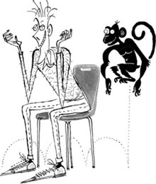
'Can I have the PM624 now, please?'
licence n. a piece of paper showing that you are allowed to do something 许可证
upstairs adv. towards a higher floor in a building, using the stairs 往楼上
照章办事
照章办事
内容简介
一个男人想在家里养只动物。不是猫，也不是狗，而是一只猴子。他需要为猴子办理一张许可证，于是来到了办证的办公室。但是在办公室工作的人都喜欢条条框框的规章，而且坚持照章办事。于是，办理一张许可证可比这个男人想的要难得多。
剧中人物
女办事员
带着一只猴子的男人
场景说明
场景是一间办公室。墙上有个牌子写着“365室”。门边有三把椅子，房间中央有一张桌子和两把椅子。桌上有一部电话。一个女人正坐在桌旁写东西。一个男人在敞开的门旁等候，他抱着一只猴子。
要准备一部电话，两张号码条，几张照片，一个写着“563室”的牌子，一个写着“365室”的牌子和一只猴子。
女人：
（没有抬头）进来。
男人：
（走进来）早上好。
女人正在写东西，没有答话。
男人：
你好——呃——抱歉打扰一下。
女人：
（生气地抬起头）你有号吗？
男人：
什么号？
女人：
你进来之前，可以在门外取一个号。你有号吗？
男人：
（四下看看）可是这儿没人啊。只有我！所以我用不着取号，不是吗？
女人：
那不重要，任何人都得取号。（她又埋头写起来。）
男人：
哦，我明白了。好吧。（他走了出去。）
女人：
（没有抬头）68号。（她等了一会儿。）69号。（她等了等。）70号。
男人拿着他的号码回来了。
男人：
我现在有号了。
女人：
（生气地抬起头）请你到那边等着！在门边找个椅子坐下！
男人：
可是——
女人：
对不起，我有工作要做。请等一下。
男人到门边坐下。女人打了个电话。
女人：
喂，汤姆。我是帕姆。我在办公室给你打电话。你今天要来我家吃饭，记得吗？好极了！再见，亲爱的！
她埋头叫了几个号码，每叫一个号码停顿一会儿。
女人：
71号。72号。73号。（看向男人）你取的是几号？
男人：
89。
女人：
哦，那你还得等很久。
男人：
可是为什么？这里根本没有人！我为什么还得等？
女人：
要照章办事，先生。（又开始叫号）74号。75号。76号。
男人：
等等！
女人：
你得等我叫到你的号，先生。
男人：
但是你已经叫过我的号了！就在刚才！
女人：
不对，我叫的是76号，你是89号。
男人：
不，不是。我看错了。看！这不是89，是68！（他把号码条倒了过来。）
女人：
可是我现在叫到76号了。我叫到你的号时，你怎么不答应？
男人：
对不起，我不知道。不过我现在就在这儿，我需要见你，这件事很重要！
女人：
呃，规定上说——哦，那好吧。
男人走到桌旁，坐在女人对面。
女人：
好了，您有什么事情？
男人：
这是365室吧？
女人：
是的。
男人：
好。嗯，我来是为了我的猴子。
女人：
啊，你给它办理许可证了吗？
男人：
没有，所以我才来这儿。
女人：
猴子有号吗？
男人：
什么？
女人：
你进来的时候给猴子取号了吗？
男人：
没有。
女人：
你们有两位，所以我需要两个号。
男人：
稍等。（他跑出去给猴子取了一个号返回。）给你。
女人：
好的。现在请把你的PM624给我。
男人：
抱歉，那是什么？
女人：
PM624吗？你要在PM624表格上回答很多关于你自己和你的猴子的问题，这个很重要。
男人：
好吧，那你能给我一张表格吗？
女人：
不行，抱歉我给不了。
男人：
好吧，那我到哪儿能弄一张？
女人：
稍等，我得打个电话。（打电话）喂，汤姆，又是我，帕姆。不是，我在上班。你来的时候能带瓶酒吗？好的，再见，亲爱的！（对男人）好了，我们说到哪儿了？
男人：
PM624表格？
女人：
啊，对。好的，你带了八张照片来吗？
男人：
八张照片？
女人：
对，四张你的，四张猴子的。
男人：
我带了。（他递给女办事员几张照片。）
女人：
好。（仔细地看照片）等一下。你的这几张照片拍得很糟糕。
男人：
（看了看照片，笑起来）不是，不是！那几张照片是猴子的！另外几张才是我的！
女人：
啊，对。不好意思，我得打个电话，很快就好。（打电话）喂，汤姆，还是我，帕姆。不是，在办公室。我们今晚要不要去看电影？好的，我下班后去买票。再见，亲爱的！（对男人）好了，我们说到哪儿了？
男人：
我在等着要一张PM624表格。
女人：
啊，我知道了。
男人：
那么，能给我一张吗？
女人：
让我看看，今天星期几？
男人：
星期二。为什么问这个？
女人：
嗯，星期一、星期三和星期五，你可以从这个办公室领PM624表格，但是星期二和星期四，你要从563室领表格。
男人：
563室！那个房间在哪儿？
女人：
哦，很容易找。从这个门出去。（男人走了出去。）上楼。
男人：
（声音从台下传来）好的！然后呢？
女人：
（把写着“365室”的牌子摘下来）左转，左转，再左转。
男人：
（声音从台下传来）好的！
女人：
不是右转！左转，左转，再左转！现在下楼，就是你右手边的办公室。（她把写着“563室”的牌子挂到墙上。）
男人：
（走进来）你好。哦，是你。
女人：
你好，这里是563室。有什么事情吗？
男人：
可我刚才就在这个房间，这是365室。
女人：
不是，这是563室。看，墙上写着“563室”。有什么事情吗？
男人：
请给我一张PM624表格。
女人：
好的，好的。请坐。
男人：
（坐下）可是我不明白！
女人：
好吧，你看到了，我在做两个人的工作。我在365室和563室办公，所以我把这两个房间合并了。这样我比较方便。
男人：
哦，我明白了。好吧，能给我一张PM624表格吗？
女人：
请稍等。（打电话）喂，汤姆，还是我，帕姆。对，我很快就要回家了。好，一会儿见。再见，亲爱的！
男人：
现在能给我PM624表格吗？
女人：
让我看看。是给这只猴子的，对吗？
男人：
对，没错。
女人：
是只要工作的猴子吗？
男人：
不是，它不工作。它住在我家里。
女人：
那就好，因为PM624表格对要工作的猴子无效。
男人：
（生气地）行了，你到底给不给我PM624表格？我半个小时之前就来了。你先是叫我去取一个号，不对，是两个号。
女人：
谁都得有号。这是规定。
男人：
（愈发生气）接着你又要八张照片。然后你又让我从这个房间出去又回来。
女人：
是让你去另一个房间，563室。
男人：
现在你又问这是不是一只有工作的猴子？这同时你一直在给你的朋友汤姆打电话，聊吃饭、看电影，还有……
他哭了起来。
女人：
规定不是我定的。你知道，我只是在这里工作。
男人：
（感觉好一些）是的，我知道。对不起，现在能给我PM624表格了吗？
女人：
稍等，现在几点了？
男人：
（看了看表）五点过一分。怎么了？
女人：
哦，天哪！这间办公室五点关门，你能明天再来吗？
男人：
啊——！（他哭着跑了出去。）
Marry Me, Darling!
Marry Me, Darling!
INTRODUCTION
Gwen is Roger's girlfriend. She first met him ten years ago, and they go out together two or three times a week. Now she would like to marry him, but he never talks about marrying. This evening he's coming to dinner at her sister's beautiful house. Perhaps he's going to ask her to marry him tonight!
CHARACTERS IN THE PLAY
Gwen, a woman of about 30
Roger, a man of about 30
PERFORMANCE NOTES
The scene is a big living room, with expensive-looking chairs around a coffee table. There is a mirror on the wall. On the table there are some cigarettes and a woman's bag. Gwen is wearing a gold watch.
You will need some cigarettes, a cup of coffee and a ring.
Gwen is looking at herself in the mirror.
GWEN
(To herself) Mmm, you look beautiful! But what does Roger think? (To the audience) Roger's my boyfriend, you see. He's very shy, you know, and very poor. But perhaps tonight he's going to ask me to marry him. He's coming here to dinner at my sister's house. Nice, isn't it?
She looks around her, smiling. The door opens.
GWEN
Ah, here he is!
Roger comes in.
ROGER
(Looking at her) Oh, Gwen!
GWEN
(Looking at him) Oh, Roger!
ROGER
(Moving nearer) Oh, Gwen!
GWEN
(Looking at him) Oh, Roger!
ROGER
(Moving nearer) Oh, Gwen!
GWEN
(Looking away) Oh, Roger! (To the audience) This is going to take all evening!
ROGER
Gwen, my love.
GWEN
(Smiling at him) Yes, Roger?
ROGER
You know, we first met a long time ago.
GWEN
Yes.
ROGER
Nine years ago, I think.
GWEN
Ten!
ROGER
Sorry, of course it's ten. (To the audience) This isn't easy. She's very rich and I'm very poor. (To Gwen) Well, after ten years, it's time...
GWEN
(Looking interested) Yes?
ROGER
It's time...
GWEN
Yes?
ROGER
To have a cigarette, I think. Have you got one, Gwen?
GWEN
Of course, darling.
ROGER
(To the audience) What a wonderful house she's got! Everything in here looks very expensive.
She takes a cigarette from the table and gives it to him.
GWEN
Here you are, darling.
ROGER
(Looking at her watch and speaking to the audience) What a beautiful gold watch!
GWEN
What did you say, darling?
ROGER
Oh, it's your hands, darling. They're wonderfully, wonderfully beautiful!
GWEN
(To the audience) What's new about my hands? (To Roger) Oh Roger, you say the nicest things!
ROGER
And your mouth, Gwen...
GWEN
(Coming nearer) Yes, Roger?
ROGER
It's a beautiful flower – Oh! (He moves quickly away, and Gwen puts her hand over her mouth.)
GWEN
(To the audience) I had some garlic for lunch! Roger, you're very handsome, you know.
ROGER
(Shyly) Oh, am I, Gwen?
GWEN
Oh yes. Your ears! I love your ears! They're very – interesting. (To the audience) And very big.
ROGER
Oh Gwen!
'Oh Roger, you say the nicest things!'
GWEN
Your eyes! I love your eyes! They're very – blue. (To the audience) And very cold.
ROGER
Oh my love!
GWEN
And your hair! I love your hair! It's very – brown. (To the audience) There isn't much there.
ROGER
Oh darling! Well, after that I must say...
GWEN
Yes, Roger?
ROGER
I need a coffee. Could you get me one, Gwen?
GWEN
Of course, darling. (She goes out.)
ROGER
(To the audience) I don't like milk in my coffee. Is she going to remember?
Gwen comes back and gives a cup of coffee to Roger.
GWEN
I put some milk in it, darling. Is that all right?
ROGER
Mmm, wonderful, darling. Just like you!
GWEN
(Smiling shyly) Oh Roger!
ROGER
Well, darling, it was eleven years ago...
GWEN
Ten!
ROGER
Of course. Ten. Ten. Sorry! So it's about time...
GWEN
Yes, darling?
ROGER
It's about time...
GWEN
Yes, darling?
ROGER
To bring you a little something.
He takes a ring from his pocket.
GWEN
Oh Roger, a ring! How beautiful!
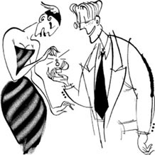
'Oh Roger, a ring! How beautiful!'
ROGER
Do you like it? (To the audience) It was very expensive!
GWEN
Of course, darling. (To the audience) Oh dear, it looks so cheap. (To Roger). Roger, how exciting! Are you asking me...?
ROGER
Yes. (Taking her hand) Marry me, darling!
GWEN
Er, well, now you ask me, I don't know.
ROGER
You don't know?
GWEN
Well, this is all very sudden, Roger. I need some more time to think about it.
ROGER
(To the audience) Oh no! That's bad! I need her money. (To Gwen) How much time do you need?
GWEN
Well, I can give you an answer next week.
ROGER
But next week I'm going to New York!
GWEN
New York! How exciting!
ROGER
It's only for work, you know. (To the audience) Of course, Susie's going to be there! I always see her when I go to New York! (To Gwen) Oh Gwen! Please give me an answer before I leave!
GWEN
You see, Roger, you need to change a lot, before I can marry you.
ROGER
Change? Me? Change? But how?
GWEN
Well, to begin with, you must stop smoking!
ROGER
(Looking at his cigarette) Stop smoking?
GWEN
And you must stop drinking coffee!
ROGER
(Looking at his coffee) Stop drinking coffee?
GWEN
And you must stop going to New York, too!
ROGER
Stop going to New York? (To the audience) Does she know about Susie? Oh dear!
GWEN
So, Roger, what do you think? Can you change?
ROGER
What can I say, Gwen? I need you. (To the audience) And I need her money! (To Gwen) I'm going to stop smoking. And drinking coffee. And going to New York. (To the audience) Sorry, Susie!
GWEN
All right, Roger. I can give you my answer here and now. My answer is yes!
ROGER
Oh Gwen, darling!
GWEN
Oh Roger! (They kiss.)
ROGER
(To the audience) Now I needn't think about money any more! I'm going to have lots of money, my darling wife's money! (Laughing)
GWEN
(To the audience) Roger doesn't know this, but I'm not rich at all! I like expensive things, but I haven't got much money. When I tell him, what's he going to say?(Laughing)
They go out, hand in hand and smiling happily at each other.
garlic n. a plant used in cooking which makes your breath smell bad 大蒜
嫁给我，亲爱的！
嫁给我，亲爱的！
内容简介
格温是罗杰的女朋友。她十年前与他相识，他们每周约会两三次。现在她想跟罗杰结婚，但是罗杰却从来没有谈到过婚事。今天晚上，罗杰要到她姐姐漂亮的家中参加晚宴。或许今晚罗杰会向她求婚！
剧中人物
格温，一个大约30岁的女人
罗杰，一个大约30岁的男人
场景说明
场景是一个宽敞的客厅，里面有一张咖啡桌，桌子四周摆放着外观高档的椅子。墙上有一面镜子。桌子上有一些香烟和一个女士包。格温戴着一块金表。
要准备一些香烟，一杯咖啡和一枚戒指。
格温在照镜子。
格温：
（自言自语）唔，你看来很漂亮！不过罗杰怎么想呢？（对观众）让我告诉你们，罗杰是我的男朋友。要知道，他非常害羞，还很穷，不过说不定今晚他会向我求婚。他今晚要来我姐姐家参加宴会。很不错，不是吗？
她看了看四周，笑了。门开了。
格温：
啊，他来了！
罗杰走了进来。
罗杰：
（看着她）哦，格温！
格温：
（看着他）哦，罗杰！
罗杰：
（走近一些）哦，格温！
格温：
（看着他）哦，罗杰！
罗杰：
（又走近一些）哦，格温！
格温：
（看向一边）哦，罗杰！（对观众）这两句能说一个晚上！
罗杰：
格温，我的宝贝。
格温：
（对他微笑）什么事，罗杰？
罗杰：
你知道，我们第一次见面是很久以前的事了。
格温：
是的。
罗杰：
我想是九年前。
格温：
十年前！
罗杰：
抱歉，当然是十年前。（对观众）这可不容易。她很富有，而我很穷。（对格温）嗯，十年了，是时候……
格温：
（很感兴趣）什么？
罗杰：
是时候……
格温：
什么？
罗杰：
抽根烟了，我想。你有烟吗，格温？
格温：
当然有，亲爱的。
罗杰：
（对观众）她的房子真漂亮！这儿的东西看起来都很值钱。
格温从桌上拿了一根烟递给罗杰。
格温：
给，亲爱的。
罗杰：
（看着格温的表，对观众）多漂亮的金表呀！
格温：
你说什么，亲爱的？
罗杰：
哦，说你的手，亲爱的。你的手真是美，太美了！
格温：
（对观众）我的手有什么可新鲜的？（对罗杰）哦，罗杰，你嘴巴真甜！
罗杰：
还有你的嘴，格温……
格温：
（凑近些）什么，罗杰？
罗杰：
是一朵美丽的花——哦！（他快速闪开，格温用手捂住了嘴。）
格温：
（对观众）我午餐吃了大蒜！（对罗杰）罗杰，你知道吗，你很帅。
罗杰：
（害羞地）哦，是吗，格温？
格温：
哦，是的。你的耳朵！我喜欢你的耳朵！你的耳朵很——特别。（对观众）还很大。
罗杰：
哦，格温！
格温：
你的眼睛！我喜欢你的眼睛！你的眼睛很——蓝。（对观众）还很冷酷。
罗杰：
哦，我的宝贝！
格温：
还有你的头发！我喜欢你的头发！你的头发——是深棕色的。（对观众）头发没多少。
罗杰：
哦，亲爱的！嗯，听了这些，我得说……
格温：
什么，罗杰？
罗杰：
我想喝杯咖啡。你能给我倒杯咖啡吗，格温？
格温：
当然，亲爱的。（她走了出去。）
罗杰：
（对观众）我不喜欢在咖啡里加奶。她会记得吗？
格温回来，端给罗杰一杯咖啡。
格温：
我在里面加了些奶，亲爱的。这样行吗？
罗杰：
唔，好极了，亲爱的。就像你一样！
格温：
（害羞地笑）哦，罗杰！
罗杰：
嗯，亲爱的，十一年前……
格温：
十年前！
罗杰：
当然，是十年前。十年。抱歉！所以现在是时候……
格温：
什么，亲爱的？
罗杰：
是时候……
格温：
什么，亲爱的？
罗杰：
给你一个小东西了。
他从口袋里掏出一枚戒指。
格温：
哦，罗杰，一枚戒指！太漂亮了！
罗杰：
你喜欢吗？（对观众）这个贵得要死！
格温：
当然，亲爱的。（对观众）哦，天哪，看起来多么廉价。（对罗杰）罗杰，真让人激动！你是要让我……？
罗杰：
是的。（握住她的手）嫁给我，亲爱的！
格温：
呃，嗯，现在你向我求婚，我不知道。
罗杰：
你不知道？
格温：
唔，这太突然了，罗杰。我需要一些时间考虑一下。
罗杰：
（对观众）哦，不！这下糟了！我需要她的钱。（对格温）你需要多长时间？
格温：
唔，我下个星期答复你。
罗杰：
可是下个星期我要去纽约！
格温：
纽约！多棒啊！
罗杰：
你知道，只是去出差。（对观众）当然，苏茜会在那儿！我去纽约的时候总是去看她！（对格温）哦，格温！请在我走之前答复我！
格温：
你看，罗杰，你得做很多改变，我才能嫁给你。
罗杰：
改变？我？改变？可是怎么改？
格温：
唔，首先，你必须戒烟！
罗杰：
（看着他的香烟）戒烟？
格温：
而且你必须戒掉咖啡！
罗杰：
（看着他的咖啡）戒掉咖啡？
格温：
而且你也不能再去纽约！
罗杰：
不能再去纽约？（对观众）她知道苏茜的事了吗？哦，老天！
格温：
那么，罗杰，你觉得怎么样？你能改变吗？
罗杰：
我能说什么呢，格温？我需要你。（对观众）而且我需要她的钱！（对格温）我会戒烟，戒掉咖啡，也不再去纽约了。（对观众）抱歉，苏茜！
格温：
好吧，罗杰。我现在就能在这里答复你：我愿意！
罗杰：
哦，格温，亲爱的！
格温：
哦，罗杰！（他们接吻。）
罗杰：
（对观众）现在我再也不用想钱的事了！我会有很多钱，我亲爱的妻子的钱！（大笑）
格温：
（对观众）罗杰不知道，我根本不富有！我喜欢昂贵的东西，但是没有多少钱。等我告诉他时，他会说什么呢？（大笑）
他们开心地相视而笑，手拉手走了出去。
ACTIVITIES: Before Reading
ACTIVITIES
Before Reading
1 Here are the six play titles. Which of the things, people or places below belongs to each play? Can you guess?
| The Butler Did It | Have a Nice Holiday! | Old Friends |
| Rules are Rules | Marry Me, Darling! | Fred's Future |
| a waiter | a crystal ball | Hollywood |
| a travel agent | a box | a gun |
| a café | a monkey | New York |
| a gold watch | Spain | a bedroom |
2 Read the back cover and the story introduction. How much do you know now about the plays? Choose words to complete these sentences.
1) Perhaps someone's wife has a brother / lover.
2) There is a cat / monkey in one play.
3) Someone wants to have a holiday / go shopping.
4) James is a very bad / good butler.
5) Someone needs a driving / an animal licence.
6) One play has an airport / office worker in it.
7) Someone has a beautiful daughter / rich girlfriend.
3 Can you do this crossword? All the words are on the back cover or the story introduction.
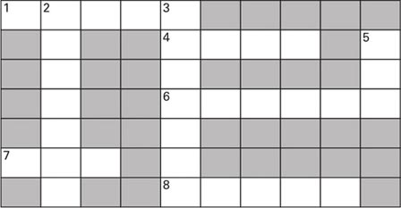
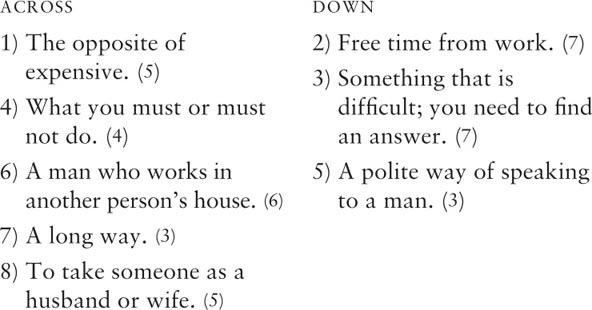
4 What is going to happen in some of the plays? Can you guess? Tick one box for each sentence.
1) James shoots his employer.
YES □／NO □
2) The man with the monkey gets his licence.
YES □／NO □
3) Roger asks his girlfriend to marry him.
YES □／NO □
ACTIVITIES: While Reading
ACTIVITIES
While Reading
1 Read The Butler Did It. Choose the best question-words for these questions, and then answer them.
What / Who / Where
1) ... is speaking to James on the phone?
2) ... is in the bathroom at the moment?
3) ... does Henry usually keep his gun?
4) ... does Henry want James to do?
5) ... does Henry say when James sneezes?
6) ... does Henry think at the end of the play?
2 Read Have a Nice Holiday! Then put these sentences in the right order to make a short paragraph of four sentences.
1) Mr and Mrs Boggis go to a travel agent,
2) So they go to Spain,
3) Florida is very expensive,
4) but they are not happy there.
5) the travel agent gives them tickets to Australia.
6) because they want to go on holiday.
7) and Antarctica is very cold.
8) When they come back,
3 Read Old Friends. Who said these words in the play?
1) 'How wonderful to see you again!'
2) 'What would you like?'
3) 'There is a man in my life, and I'm going to marry him next week!'
4) 'He asked me to call him Bob.'
5) 'I'm his first girlfriend, you see.'
6) 'Help! Help! Help!'
4 Read Fred's Future. Are these sentences true (T) or false (F)?
1) Rosa asks people for money when she tells them their future.
2) Fred has got a very nice American girlfriend.
3) Fred is going to shoot himself.
4) Rosa tells Fred his future three times.
5) The most important thing for Fred is to be famous.
5 Read Rules are Rules and Marry Me, Darling! Who did what in these plays? How many true sentences can you make?
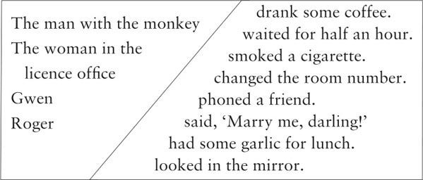
ACTIVITIES: After Reading
ACTIVITIES
After Reading
1 Here are some new titles for the six plays. Which titles go with which plays? Some are better titles than others. Can you say why?
| The Man with the Monkey | Anyone for Tennis? |
| Love is Everything You Need | No Going Back |
| One Man and Two Women | Bless You, James! |
2 Perhaps the man with the monkey wrote his diary for the day when he went to the office. Join these halves of sentences together, using the words below to join them.
and and then because but so when
1) I went to the licence office
2) First she told me to get a ticket,
3) I had a very bad day today,
4) In the end she closed the office
5) Suddenly I got angry,
6) I waited and waited in the office,
7) ... she told me to go to another office.
8) ... I feel very tired now.
9) ... it was only one minute past five!
10) ... I wanted a licence for the monkey.
11) ... the woman there didn't want to help.
12) ... began to cry!
Now put the six sentences in the right order to make a paragraph.
3 Perhaps Celia had a talk with Robert later. Write out their conversation in the correct order, and put in the speakers' names. Celia speaks first (number 5).
1) _____: So that's the end for us, is it, Robert?
2) _____: Mandy? Yes, she's beautiful, and a wonderful dancer!
3) _____: Well! So you really like her?
4) _____: Well, yes, darling. And, er, can you give me back my ring? It was very expensive.
5) _____: Now Robert, what's all this about Amanda?
6) _____: Oh darling, with Mandy, it's different. She moves so well!
7) _____: Here it is. I never liked it. And stop calling me darling!
8) _____: Yes, I'm sorry, Celia darling, I do like her.
9) _____: But you don't like dancing!
10) _____: Do you know, I think – yes, I am, darling!
11) _____: Just tell me one thing – are you going to ask Amanda to marry you?
4 Perhaps this is what three of the characters in the plays are thinking. Which characters are they, and in which plays? What is happening in the play at the moment?
1) 'Well, good luck to him. Everyone wants to be rich and famous, of course. And there are five more people waiting outside! Well, I know about my future – I'm not going to be famous, but I am going to be rich! Next, please!'
2) 'Well, it's now or never. I must ask her tonight. Let's see, have I got the ring? Ah yes, in the top pocket. But what am I going to say? And what's her answer going to be?'
3) 'What happened? Is she really dead? Did she have a lover? Or is he only the plumber – what was his name again? And what's going to happen to me, when someone finds their bodies? Or perhaps there aren't any bodies!'
5 Here is a puzzle. The answer is a word from Old Friends and Marry Me, Darling! with eight letters. To find the word, choose the right letters (one from each sentence) and write them in the boxes.
| My first is in SHY. | □ |
| My second is in WATCH. | □ |
| My third is in BROWN. | □ |
| My fourth is in DINNER. | □ |
| My fifth is in SANDWICH. | □ |
| My sixth is in SCHOOL. | □ |
| My seventh is in MILK. | □ |
| My eighth is in EYES. | □ |
You can say this about Robert, Bob, and Roger, but not usually about Celia, Amanda or Gwen. What is it?
6 Perhaps Mrs Roggis wrote a postcard from Australia to her sister. Use these words to complete it. (Use each word once.)
angry, breakfast, find, hot, laugh, pool, quiet, room, television, tickets, well
Dear Sue,
Here in Queensland it's very _____ at the moment – 40℃! So Trevor swims in the _____ most of the time. I'm sleeping_____ because the hotel is usually very _____. But last night the young man in the _____ next to us had his _____ on very late. And when Trevor spoke to him at _____, he got very_____. Really, these young people! So we're going to change our hotel today.
Yesterday Trevor suddenly said, 'Where are our _____ home? I can't _____ them!' He does like a good _____!
See you soon. Love, Linda
7 Which of these ideas do you agree (A) or disagree (D) with? Say why you agree or disagree.
1) It is wrong to have two girlfriends at the same time.
2) You must never kill anyone.
3) Nobody can see into the future.
4) Old school friends are always your best friends.
5) Everybody needs four weeks' holiday a year.
6) Nobody needs to have a butler these days.
7) Money is more important than love.
封底
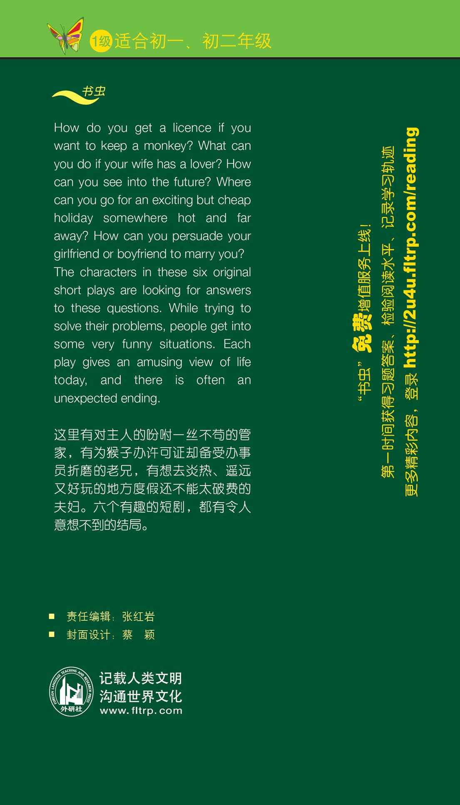